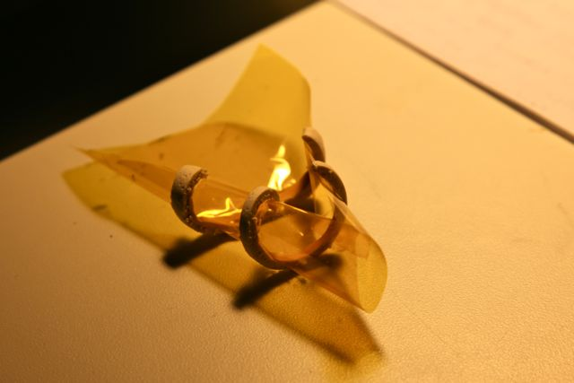
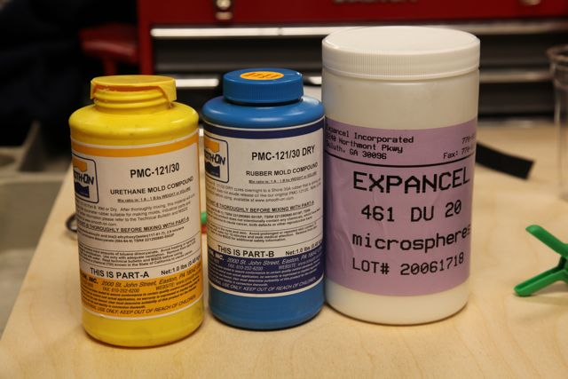
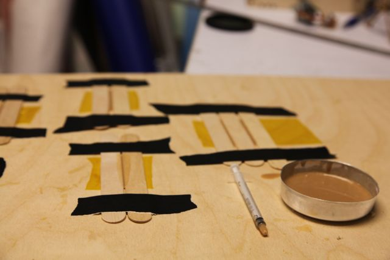
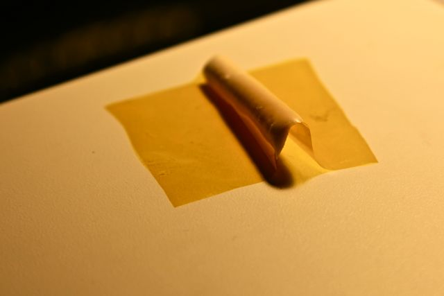
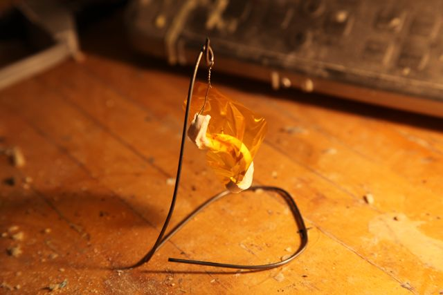
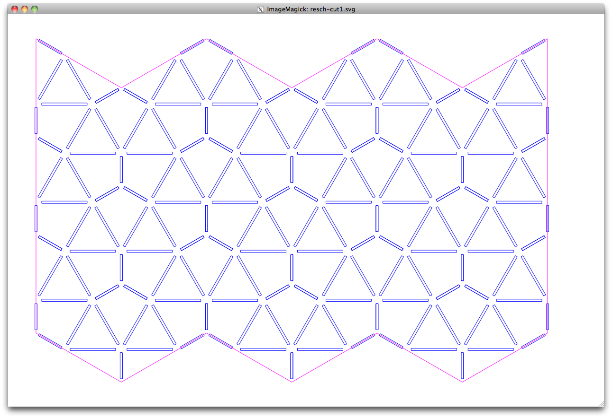
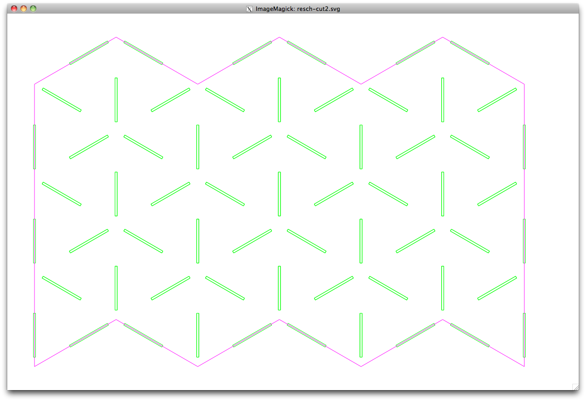
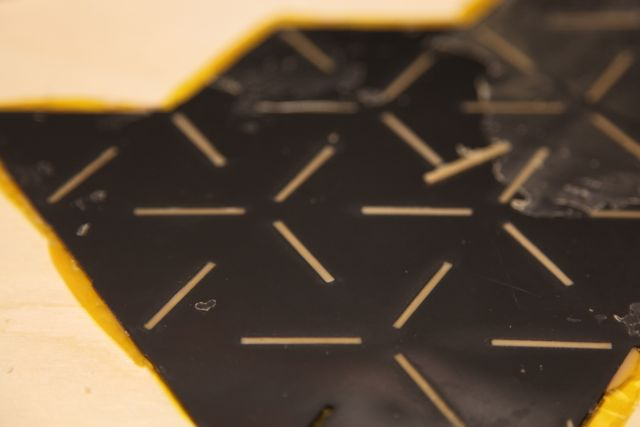

6.849: geometric folding algorithms

Acrylic Microspheres + Silicone
Talking to my labmate Kenny Cheung one day this week, he told me about a project he'd started using the active ingedient in puffy paint, thermoplastic microspheres, to make material fold. I had to try it, so he gave me a sample of Expancel microspheres to play with.
To give the microspheres a medium in which to expand, I mixed them with Smooth-On 121-30.

Casting test strips.

After baking.


Creating a two-sided Resch pattern using masks.

Cut files for masks.
|  |
 |
After curing, the surface residue can be rubbed off easily.

6.849 2012